Logging¶
Note
All the logging options should say to which file they print output. Please correct this!
- LOGGING
- Start the logging input block. The logging options allow additional (potentially expensive, potentially verbose) information to be printed out during a calculation. By default, all logging options are turned off.
[Logging options—see below.]
- ENDLOG
- End the logging input block.
General options¶
- FMCPR [LABEL, RHO, 1000, EXCITATION]
More than one of the options can be specified.
Log the following to the PATHS file:
- LABEL
Logs the determinants contained by each graph as each determinant is generated in the format: [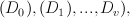] where each determinant given as a comma-separated list of the indices of the occupied orbitals: e.g.
 ( 1, 2, 9, 10,).
( 1, 2, 9, 10,).If CSFs are being used, then the CSF is printed. There is no newline after this.
For MULTI MC or SINGLE MC, only the non-composite graphs are printed.
- EXCITATION
- Log each graph in excitation format instead of full format above. The format is
- [A( i, j)->( a, b),B( k, l)->( c, d),...,C( m, n)->( e, f)]
- where
- A, B,..., C are determinants in the graph from which the excitation is made. i, j,... are the orbitals within that determinant which are excited from, where (i<j, k<l,...). a, b,... are the orbitals they are excited to, where (a<b, c<d, ...).
This format does not in general provide a unique way of specifying multiply connected graphs, but the first possible determinant to which the next det in the graph is connected is chosen, so what is output should be unique. Single excitations are written as e.g. A( i, 0)->( a, 0).
- RHO
- Log the 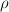 matrix for each graph in the form:
- (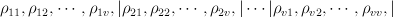),
where the graph consists of 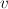 vertices. A newline is appended.
- XIJ
Log the xij matrix, which contains the generation probabilities of one determinant in the graph from all the others. For MC this is already generated, but for full sums this must be generated, so will be slower. Generation probabilities are set with the EXCITWEIGHTING option.
- The format is:
- {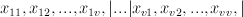}
In general 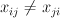. The 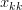 element lists the number of possible excitations from 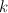 determinant. The matrix is followed by a newline.
- After all these possible options, the following are printed:
- Weight [pGen] ETilde*Weight Class [Accepted]
pGen is only printed for: Monte Carlo, or if doing a full sum and the XIJ logging option is set. Accepted is only printed for Monte Carlo calculations. A newline is placed at the end of this data. For Monte Calo calculations, the values printed depend on the options. If LABEL is set, then all generated graphs and their values are printed, otherwise only values of accepted graphs are printed.
- CALCPATH [LABEL RHO]
- Log CALCPATH_R to PATHS. Either just label logging or also log the matrix, with the same format as above.
- HAMILTONIAN
- Log HAMIL, PSI and PSI_LONG.
- HFBASIS
- Log HFBASIS.
- HFLOGLEVEL [LEVEL]
Default 0.
If LEVEL is set to be positive, the density matrices, fock matrices and eigenvectors during a Hartree–Fock calculation are printed out to SDOUT.
- MCPATHS
- Log MCPATHS data to the MCPATHS file for full vertex sum and MCSUMMARY file when using a METHODS section. Also log to the RHOPII file.
- PSI
- Log PSI_COMP.
- TIMING [iGlobalTimerLevel | LEVEL iGlobalTimerLevel | PRINT nPrintTimer]
- LEVEL iGlobalTimerLevel
- Default 40. Timing information is only recorded for routines with level less than or equal to iGlobalTimerLevel. Less than 10 means general high level subroutines. Greater than 50 means very low level. Routines without a level are always timed (which is most of them). The greater the value of iGlobalTimerLevel, the more routines are timed. This can affect performance in some cases.
- PRINT nPrintTimer
- Default 10. Print out timing information for the nPrintTimer routines which took the longest time.
- XIJ
- Synonym for FMCPR XIJ.
FCIMC options¶
- POPSFILE
- Print out the determinants at the end of the MC run. A calculation can then be restarted at a later date by reading the determinants back in using READPOPS in the CALC section. at a later date. Walker number can also be scaled up by using SCALEWALKERS
- ZEROPROJE
- This is for FCIMC when reading in from a POPSFILE. If this is on, then the energy estimator will be restarted.
- WAVEVECTORPRINT
- This is for Star FCIMC only - if on, it will calculate the exact eigenvector and values initially, and then print out the running wavevector every WavevectorPrint MC steps. However, this is slower.
GraphMorph options¶
- DISTRIBS
- Write out the distribution of the excitations in each graph as it morphs over the iterations. The first column is the iteration number, and then subsequent columns denote the number of n-fold excitations in the graph.
PRECALC options¶
- PREVAR
- Print the vertex level, Iteration number, parameter, and expected variance, for each parameter which was searched for in the PRECALC block, showing the convergence on the optimum value, to the PRECALC file.
- SAVEPRECALCLOGGING
Allows different logging levels to be used in the PRECALC block than for the main calculation.
All logging options specified before SAVEPRECALCLOGGING are only used in the the PRECALC part of the calculation. All logging options specified after SAVEPRECALCLOGGING are only used in the the main part of the calculation.
Monte Carlo options¶
- BLOCKING
- Perform a blocking analysis on the MC run. An MCBLOCKS file will be produced, which lists log(2)[blocksize], the average of the blocks, the error in the blocks(where the blocks are the energy ratio), and the full error, treating the energy estimator as a correlated ratio of two quantities.
- VERTEX [EVERY n]
Log the vertex MC with 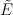 every n (real) cycles and/or log the vertex MC contribution every cycle. Setting Delta 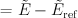, where 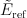 is usually the 1-vertex graph:
- EVERY
write a VMC file with the following info, with a new line each time the current graph changes:
tot # virt steps, # steps in this graph, #verts, Class, Weight, Delta, <sign(W)>, <Delta sign(W)>, ~standard deviation <Delta sign>/<sign>,pgen
- n:
write a VERTEXMC file with the following info:
0, #graphs, <sign(W)>, stdev(sign(W)), <Delta>, <sign Delta>/<sign>, <Delta^2>, acc ratio, trees ratio, nontree+ ratio, non-tree- ratio, <Delta sign(W)>, E~ reference, #sequences,w reference
Note
George, what are most of these values?
- WAVEVECTORPRINT [nWavevectorPrint]
Relevant only for Monte Carlo star calculations.
Calculate the exact eigen-vectors and -values initially, and print out the running wavevector every nWavevectorPrint Monte Carlo steps. This is slows the calculation down substantially.